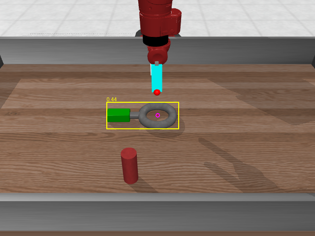
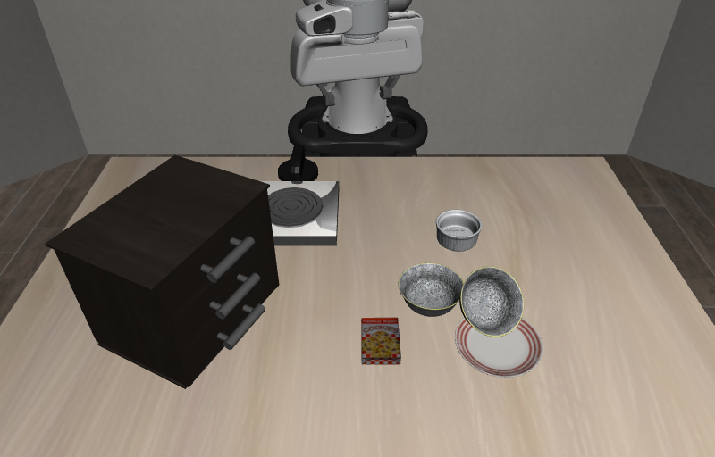
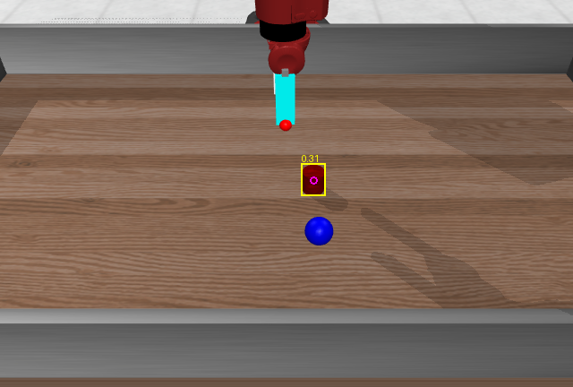
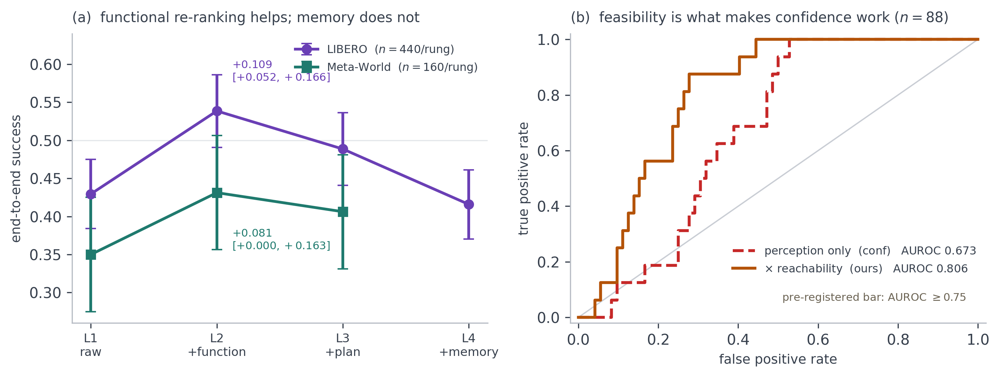
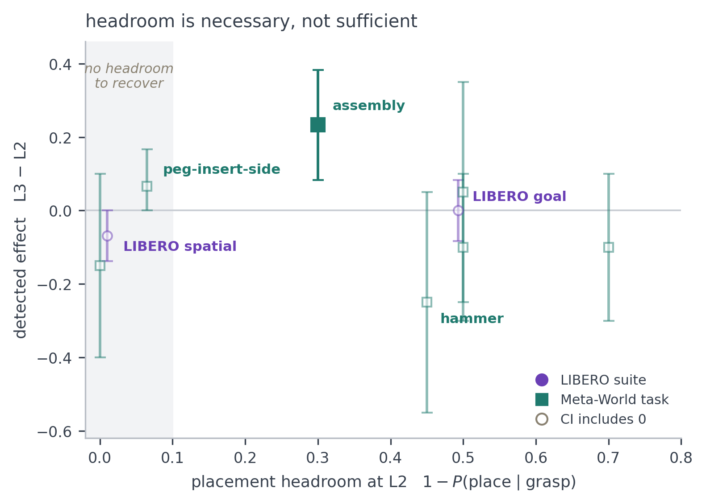

Affordance-Grounded Coding Agents are Robust Where Vision-Language-Action Policies Fail
†Corresponding author. Yeungnam University.
Abstract
Manipulation policies are expensive in a way that does not amortise: a policy learned from demonstrations must acquire new ones for every task, object and workspace, and reinforcement learning moves that cost into reward engineering and interaction rather than removing it. We ask how far the moment of contact can be improved with no task-specific data at all. Language-model manipulation agents plan competently and then fail at the grasp, because the detectors they call rank candidates by closure stability alone: a ranking blind both to which part of an object is functionally correct to hold and to whether the arm can reach that grasp. We present AFFORD-X, a training-free affordance layer that sits between a frozen agent and a frozen grasp detector and re-ranks candidates by function gated on embodiment feasibility. Functional re-ranking improves paired end-to-end success by +0.109 [+0.052, +0.166] over raw grasp quality on LIBERO (n = 440) and replicates zero-shot at +0.081 [+0.000, +0.163] on Meta-World (n = 160), across two simulators, two arms and two gripper morphologies with no tuning. These gains are measured at the level of grasp selection; integrated into a full code-as-policy agent under LIBERO-PRO perturbations we observe no end-to-end difference (−0.025 [−0.175, +0.150], p = 1.000), and we report that null together with the power and tool-set confounds that bound it. Our central mechanism finding is that feasibility is the term deciding whether affordance signals help at all: a perception-only grasp confidence predicts failure at AUROC 0.673 and fails its pre-registered bar, while multiplying it by the executed grasp's reachability reaches 0.806 under prospective validation; and a grasp memory that ignores feasibility actively hurts (−0.073 [−0.132, −0.016]). Conditioning the grasp on the agent's declared next action is worth +0.233 [+0.083, +0.383] where the executor can express a constrained placement, and is unmeasurable where it cannot: over 2,392 controlled paired episodes we show that put-X-on-Y benchmarks structurally cannot register grasp-placement coupling, and we give the headroom arithmetic that identifies a benchmark regime that can.
Where the Layer Sits
Four stages, and only one of them is ours. Pick a stage to see what it does and what is frozen.
The Four Terms
Two of them decide eligibility. Two of them decide preference. The order is the contribution.
What it is
The executor's grip term gk = qk rk ck combines detector quality, reachability and collision margin, and a relative floor keeps only the candidates the arm can plausibly execute: gk ≥ 0.5 maxj gj. Everything below that floor scores zero.
Why the order matters
Multiplying every term into every candidate lets a semantic or plan-derived preference outbid grip feasibility. In an early pilot it did exactly that: 16 of 19 paired losses under plan conditioning failed at the grasp itself rather than at the subsequent placement.
# affordx/capx/affordance_ops.py :: embodiment_gated_scores
grip = quality * reachable * collision
gate = grip >= GRIP_GATE_FRAC * grip.max() # GRIP_GATE_FRAC = 0.5
return np.where(gate, grip * functional * context * memory_prior, 0.0)Two properties follow and both matter. Preference can choose among holdable grasps but can never select an unholdable one. And with neutral context and memory the rule reduces exactly to grip ordering, so the best-grip candidate always passes its own gate: the layer degrades to the detector rather than to noise.
Approach
Grasps whose gripper axis aligns with the verb's canonical approach are preferred, scored as 0.3 + 0.7dk with dk the downness of the approach axis for a top-down verb. Misaligned grasps are attenuated rather than discarded.
Part semantics
A verb-conditioned part query restricts candidates to the functionally correct region of the object, so a wrench is held by its handle rather than its ring. Candidates outside the arm's reachable box are multiplied by 0.1.
A mug handle, a wrench handle and a knife handle are the parts a person would hold. Grasping the blade, the ring or the rim is often more stable and usually wrong: this term is what the detector's closure-stability objective cannot express.
Compiled from the declaration
When the agent declares its next action, that declaration compiles into geometric constraints over the candidate set. The primitives are pure geometry over the segmented point cloud, with no learned component anywhere in the path.
Where it pays
Threading a wrench over a peg compiles to grasp_region:handle, which leaves the ring free.
That is worth +0.233 [+0.083, +0.383] on Meta-World assembly, and is unmeasurable on eight
other regimes for reasons the headroom section makes precise.
grasp_regionkeep_part_clearclearanceapproach_fromavoid_occluding
The mechanism has a predicted signature and shows it: placement failures fall while grasp failures do not, so the constraint does not grasp better, it places better given a grasp. The same signature replicates independently on LIBERO-10 mug-to-plate, where placement given a grasp rises monotonically 0.81 → 0.94 → 1.00.
Pre-registered, and it failed
We declared a perception-side carrier in advance and it missed its 0.75 bar twice, at AUROC 0.673 on 100 held-out episodes and again on a fresh replication. We report the failure before the revision because the order is what a reader needs to audit the claim.
The revision that works
Multiplying the carrier by the executed grasp's reachability reaches 0.806, declared before the validation episodes were collected. Confidence is thus a property of the grasp and the arm, not of the perception alone.
The agent uses this scalar as a gate before committing to a motion. The threshold and the verify-and-replan loop belong to the agent's policy, outside our boundary.
Turn the Gate Off
The task is “put the wrench on the peg”, the same scene as stage 3 of the framework figure. Eight candidates come back from the detector. Switch terms on and off and watch which one the arm executes.

Green handle, grey ring, red peg. The ring has to end up over the peg, so whatever holds the wrench must not be holding the ring.
Selection rule
Bars are the final score sk, normalised to the winner. Gated candidates score exactly zero and are drawn hatched. Three things are worth trying: turn the memory prior on with the gate off, which promotes a pinch grasp the executor cannot hold and reproduces the pilot failure the gate exists to prevent; turn the plan constraint off, which hands the task back to the ring; and raise τ past 0.7, which shrinks the feasible set until the plan has nothing left to choose between.
What this is. A worked example, not logged data: the eight candidates and their term values
are illustrative. The scoring rule, the 0.5 floor and the term ranges are the shipped ones, from
affordx/capx/affordance_ops.py. Per-candidate score arrays are not written by the evaluation
runs, so a real candidate set cannot be replayed here; the measured distribution of the terms for
selected grasps, over 1,781 selections, is the right panel of the framework figure above.
The Scripted Ladder
Four rungs share executor, perception, seeds and task instances and differ by exactly one mechanism, so each paired delta attributes to one change. Switch the metric; hover a marker for its interval.
Markers are rates with 95% bootstrap intervals; the annotated values are paired bootstraps on matched (instruction, seed) keys, which is the estimate the paper quotes. Keying on the task language rather than the task index matters: suite indices collide across suites and would silently pair two different tasks.
Functional re-ranking is worth +0.109 on LIBERO and +0.081 on Meta-World
The Meta-World replication is zero-shot: the same code, unchanged, moved from a 7-DoF Franka Panda to a 4-DoF Sawyer with a different gripper and a different task distribution. Grasp rate rises from 0.477 to 0.623 on LIBERO and 0.619 to 0.681 on Meta-World, which is where the end-to-end gain comes from.
A grasp memory that ignores feasibility costs −0.073
Its prior was fitted to a failure-dominated pool, 8 successes against 44 failures, which makes it repulsive almost everywhere. We withdraw memory as a contribution rather than report the mechanism without the effect, and we leave the rung on the chart.


| Rung | Grasp | Success | Success (constrained) |
|---|---|---|---|
| L1 · raw detector | 0.619 | 0.350 | 0.463 |
| L2 · + functional prior Ours | 0.681 | 0.431 | 0.562 |
| L3 · + plan constraints | 0.625 | 0.406 | 0.562 |
| L2 − L1 | +0.081 [+0.000, +0.163] (n = 160) | ||
| L3 − L2 | −0.025 [−0.113, +0.062] (n = 160) | ||
| L3 − L2, constrained | +0.000 [−0.125, +0.125] (n = 80) | ||
Feasibility Is the Binding Constraint
Three mechanisms we added independently each underperformed in the same way, and each recovered when it was subordinated to what the embodiment could actually execute. The confidence result is the direct measurement.
Grasp confidence · 0.673 → 0.806
The perception-only carrier misses the 0.75 bar. Multiplying it by the executed grasp's reachability clears it on 88 held-out episodes under prospective validation. The same substitution on the earlier post-hoc collection gives 0.693 → 0.801.
Grasp memory · −0.073 [−0.132, −0.016]
A prior fitted without regard to feasibility is repulsive almost everywhere and measurably hurts.
Plan constraints · negative, then +0.233
Negative while they could outbid grip quality; worth +0.233 [+0.083, +0.383] once selection is restricted to a feasible subset first.

Can the Benchmark Even Measure It?
A plan-conditioned grasp shows up end-to-end only if placement is both imperfect given a successful grasp and sensitive to which grasp was taken. Hover a regime to read its paired interval.
Nine regimes with at least 10 paired episodes: two LIBERO suites and seven Meta-World tasks. Filled markers have an interval excluding zero; exactly one does. Headroom is necessary and not sufficient: regimes at x ≈ 0 cannot register the effect and none does, while hammer has ample headroom (0.45) and a negative point estimate, because the scripted top-down executor floors its placement irrespective of grasp.
Nominated before the run, with a predicted signature that shows
Assembly was named in advance as the one regime whose executor can express a constrained placement, on the mechanical argument that the wrench's ring must stay clear to thread the peg. It is not the survivor of a scan. Placement failures fall while grasp failures do not, which a chance-significant result has no reason to satisfy, and the same signature replicates on LIBERO-10 mug-to-plate.
Put-X-on-Y benchmarks cannot register grasp-placement coupling
On LIBERO spatial, placement succeeds for 99.0% of episodes in which a grasp succeeded, so there is no headroom to recover. Pooled across suites, L2 already places 86.5% of what it grasps, so even perfect placement is worth +0.084, which is the bar itself. Where placement is constrained, the scripted executor floors it equally for all rungs: on LIBERO goal, L3 grasps strictly better (0.592 → 0.692) yet places worse given a grasp (0.507 → 0.434), netting exactly zero.
Meta-World MT50, Zero-Shot
189 episodes over 37 of 50 tasks, 5 episodes per task, with no task-specific training of any kind. Filter the grid and watch the aggregate move: a single number over all tasks mixes tasks the layer cannot act on with tasks it can.
The easy tier is not easy for this executor. Nine tasks turn about a hinge, all nine are
labelled easy, and all nine score 0/5: our pull primitive commands a straight line, which is
exact on a prismatic joint and wrong on a revolute one. Removing that family raises easy from 0.492 to 0.787
and the aggregate from 0.466 to 0.611, restoring the benchmark's own ordering. Both figures are given so the
exclusion is visible. Restricting attention to the six tasks whose success actually depends on which grasp is
chosen gives 20/30, or 66.7%.
| Method | Venue | Train | Easy | Mid | Hard | V. Hard | Avg. | Cov. |
|---|---|---|---|---|---|---|---|---|
| HarmonyDream | ICML'24 | R | 81.0 | 91.0 | 72.5 | 44.5 | 72.2 | 50/50 |
| Diffusion Policy | IJRR'25 | D | 83.6 | 31.1 | 9.0 | 26.6 | 37.6 | 50/50 |
| TinyVLA | ICRA'25 | D | 77.6 | 21.5 | 11.4 | 15.8 | 31.6 | 50/50 |
| Mamba Policy | IROS'25 | D | 95.4 | 92.2 | 48.3 | 71.2 | 76.8 | 50/50 |
| π0 | RSS'26 | D | 71.8 | 48.2 | 41.7 | 30.0 | 47.9 | 50/50 |
| AFFORD-X Ours | – | none | 49.2 | 45.7 | 33.3 | 50.0 | 44.6† | 37/50 |
†Partial evaluation: our run covers 37 of 50 tasks, so this row is not directly comparable to the complete rows above and we do not read the table as a ranking. Every published entry consumes task-specific supervision on these very tasks; AFFORD-X consumes neither demonstrations nor reward. The averages therefore separate methods by supervision budget at least as much as by mechanism. Our very-hard figure rests on 2 of 5 tasks and 10 episodes, far too little to separate from any published row, and our easy figure is depressed by the revolute-articulation defect rather than by the selection layer.
Nulls and Evidence Boundaries
The negative results carry most of the methodological content, so they are reported in full rather than summarised away.
Limitations
Open-vocabulary grounding fails on product names
In every detector we tried. On a grocery scene, OWLv2 is blind to four of six product names and confidently wrong on a fifth; SAM3 is wrong on three of six, though it fails at near-zero confidence where OWLv2 failed at 0.20 to 0.25. Both ground visual categories reliably (0.71 to 0.91). The failure mode to guard against is confident wrongness, not blindness.
Revolute articulation is unsolved, and we could not fix it
The straight-line pull primitive is exact on prismatic joints and wrong on revolute ones: 10/10 on drawers against 0 across doors, faucets, handles and levers. We implemented a tangent-following pull and tested it twice under matched seeds. It failed both times and regressed the prismatic control it was required to preserve, so we left it unregistered and report the negative result.
The 4-DoF embodiment collapses poses to points
Meta-World's Sawyer reduces grasp poses to grasp points, so the orientation half of grasp selection is untested there. The LIBERO Panda is where orientation is exercised.
The scripted executor cannot perform constrained placement
Which is precisely what makes plan-conditioned grasping unmeasurable on most regimes. That is a limitation of the instrument, not evidence against the hypothesis.
Controls we identify as required and do not yet report
A random-candidate control, a placebo-tool arm with affordance-sounding names over grip-quality argmax, a controlled feasibility-gate run varying only the gate, and a visual-prompting baseline in the MOKA and CoPa style over an identical candidate set, reported with its fallback rate.
No real-robot study
All results are in simulation. The layer emits 6-DoF poses against a frozen detector and a standard IK solver, so the interface transfers unchanged, but nothing here measures the sim-to-real gap in the detector or the executor, and we make no claim about it.

BibTeX
@misc{sarowar2027affordx,
title = {Affordance-Grounded Coding Agents are Robust Where Vision-Language-Action Policies Fail},
author = {Md Selim Sarowar and Sungho Kim},
year = {2027},
note = {In preparation},
url = {https://physical-agi.github.io/AFFORD-X/}
}Placeholder entry. It will be replaced with the proceedings entry once the paper is accepted.